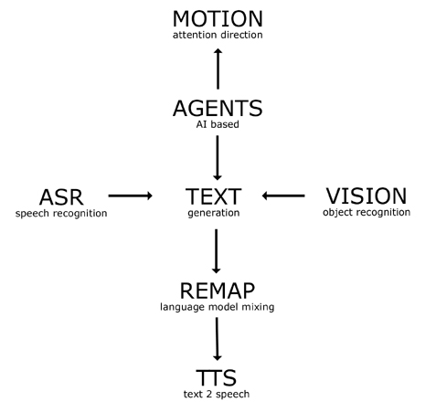
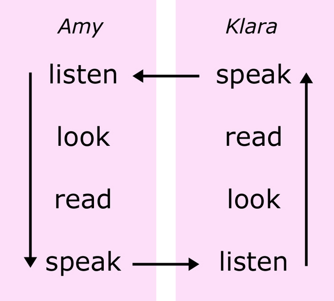
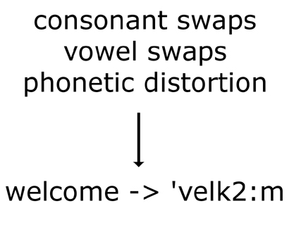
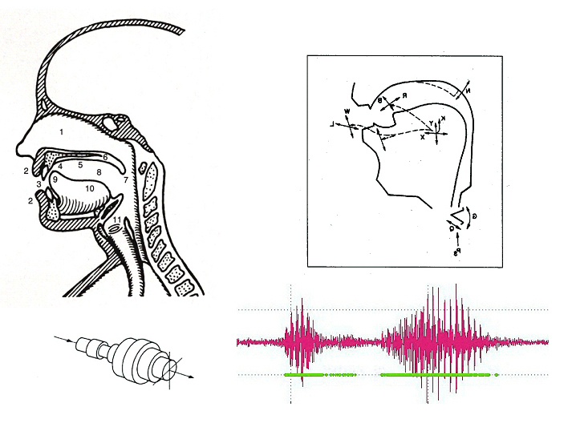

The future might be nasty.

[.wav, 576kb], [.au, 576kb], [.aiff, 576kb]
----------------------------------------------------------------------------------------------------
Amy and Klara are robots capable of synthetic text to speech generation and automated speech recognition. Anyone who has ever listened to computer generated speech knows the strange feeling of hearing a voice that sounds human but feels alien. Synthetic speech has achieved such levels of 'naturalness' that it can be confused with the voice of a living human being. However, this naturalness is shallow; not even skin deep. In synthetic speech we are confronted with a new fallout of automation technologies.
It is not only the disconnect between a human voice and a box that produces it that can make one feel uncomfortable. It is also what these voices have to say to us. The language of synthetic speech recognition and synthesis systems is a highly selective subset of the full, rich and messy body of linguistic corpora that comprise our oral and written languages. Exclamations are absent, questions are rare and the vocabulary is generally optimized for commerce.
Here the charged world of foul language is under investigation. Swearing offers several interesting conduits into a critique of the under-exposed normative tendencies in automated language representation and social robotics. Why are most smart gadgets and toys friendly and playful, why are they usually modelled as pets or servants? Machines that curse and pick a fight might offer a more realistic preparation for a shared future between machines and humans.
Linguistic taboos derive from social taboos. Because defecation in public is taboo, the word shit is considered foul language. But where bodily needs differ, taboos change. Will we map our own taboos onto machines? While body centric, swearing is rarely literal. Swearing is literal language transformed into non-literal language. And swearing is so deliciously unnecessary. The fact that speech can still be understood when blasphemy is removed proves its informational redundancy. And this complements the often spotty responsiveness of even the best speech recognition systems. Misunderstandings are preprogrammed.
-----------------------------------------------------------------------------------------------------
Documentation:
CHI workshop on Abuse and Misuse of Interactive Technologies: CHI2006 paper.
Full Journal Article: Leonardo2008
ISEA2006, video documentation:
720x480 @30f/s: [.wmv 4.5M], and [.mpg 12.0M], 320x240 @30f/s: [.wmv 2.0M], and [.mpg 4.6M]
Amy+Klara photobase: hi-res images
-----------------------------------------------------------------------------------------------------
Technical Notes
Two agent programs written in python with the open source AIML environment set the overall sensitivity and agitation levels of the two boxes by statistically evaluating texts from online magazines. A machine vision program written in C with the open source OpenCV library checks for people and pink objects. Sound data captured by noise reducing microphones are piped to the FONIX proprietary speech recognition engine and its publicly available software development kit. Responses to the incoming sound and image data are evaluated by the agent programs mentioned above running on both computers.
|  |  |
{kind=link}
{kind=link}
There is no program that controls the overall flow of events. Each robot is primed for nasty exchanges, but needs the other robot to complete itself. If the robots do not a perceive pink box in their vicinity, they remain silent. Otherwise, one might start to speak (this is often Amy), the other will respond. Because the robots are specially trained to be sensitive to a vocabulary of foul language, one bad word leads to another. The responses are synthesized from text to speech with a proprietary speech synthesis engine made available by the ETH of Zuerich and SVOX. Klara's German accent is generated at run time by swapping select vowels and consonants between the SVOX language models for German and English and applying several ad hoc SAMPA alphabet based phonetic remappings for special cases. The output audio stream is then modified by a C program using the SoX open source sound processing library.
|  |  |
{kind=link}
{kind=link}
-----------------------------------------------------------------------------------------------------
bibliography
>> language and philosophy
L. Wittgenstein. Philosophische Untersuchungen, 1953
P. P. Pasolini. Empirismo Eretico, 1971
W. Labov. Sociolinguistic Patterns, 1972
G. Deleuze, F. Guattari. 1000 plateaux ; ch 4 postulates of linguistics, 1980
P. Rose, Pressures of the Text, video 17 minutes, 1983
J. Lecercle. The Violence of Language, 1990
G. Hughes. Swearing: A Social History of Foul Language, Oaths, and Profanity in English, 1998
D. H. Roazen. Echolalias. On the Forgetting of Language, 2005
R. Aman, Maledicta Journal, volumes I-XIII, http://www.sonic.net/maledicta/
M. B�hlen, JT Rinker. Experiments with Whistling Machines, LEONARDO: "The Word---Voice, Language and Technology", 12/2005
>> language and AI
L. Steels, F. Kaplan. Aibo's First Words. The social learning of language and meaning, in: Evolution of communication, 4 (1), 2001
M. Christiansen and S. Kirby. Language Evolution: The Hardest Problem in Science? In: Language Evolution: The States of the Art. Oxford University Press, 2003
>> speech synthesis: technical papers
M. Schroeder. Emotional Speech Synthesis. Eurospeech2001, Denmark 2001
B. Pfister, H. Romsdorfer. Mixed-lingual test analysis for polyglott TTS synthesis, Eurospeech2003, Switzerland 2003
B. Pfister et al., Skript zur Vorlesung Sprachverarbeitung I+II Abteilung fuer Elektrotechnik, ETH Zuerich, 2005
A. Black, K. Lenzo. Foreign Accents in Synthetic Speech: Development and Evaluation, InterSpeech2005, Portugal 2005
software resources
>> proprietary: SVOX SDK, FONIX SDK
>> open source: Sphinx4, Python AIML, OpenCV, SoX, MySql